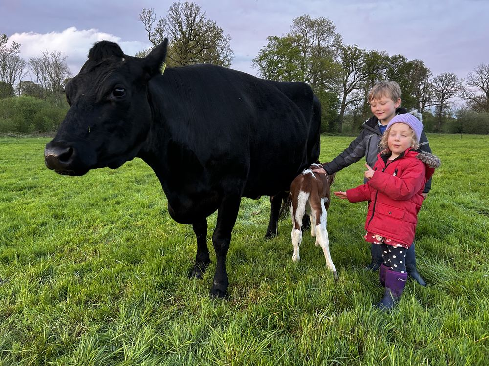
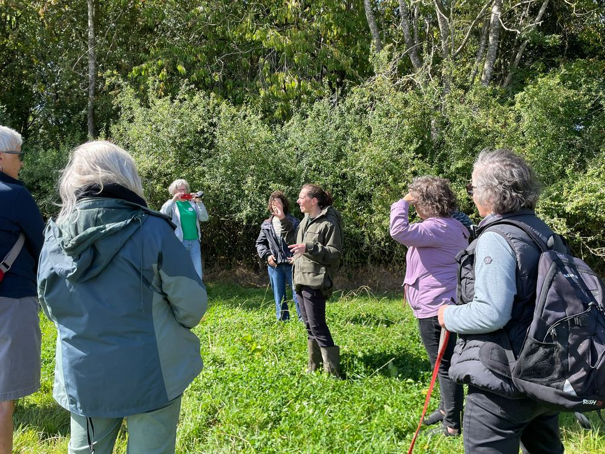
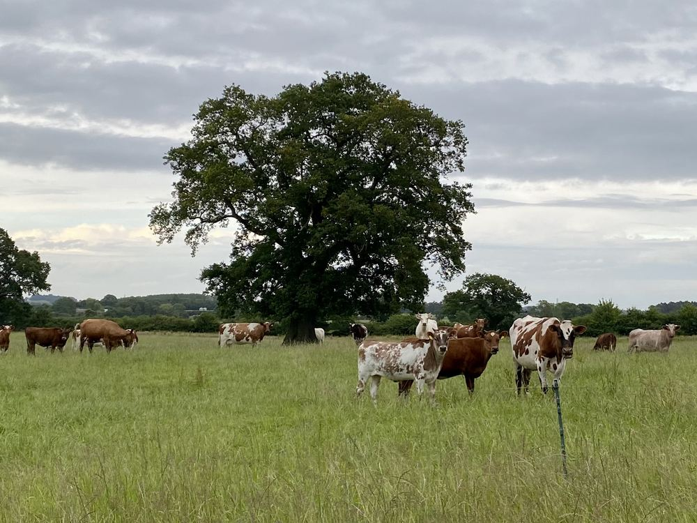

Field to Folk · Experiences
Come and meet the herd
Spend time with our cows and calves, walk the fields where we've been regenerating the soil for a decade, or invite me to speak to your group. Every visit is guided by me.
Why I share the farm
For me, my best days on the farm are spent walking amongst the herd: observing them, interacting with them, watching their behaviour and how they interact with me, and looking for any physiological signs and what they could be telling me about their health. And looking at the ground, seeing what they're eating and how they're interacting with the soil and the nature that surrounds them.
It's probably my most peaceful time, the time when I have the most stillness in my brain and can think deeply about things. It really refreshes and replenishes me.
When I've brought families, school groups or groups of anyone really onto the farm, and shared that environment with them, whether in the milking parlour or in the field stroking the cows, they really do share in that special moment. It gives me a chance to share the story of the cows and the land. So offering this to more people is something I would really like to do.
Casha
Cow cuddling

I recently had the pleasure of showing a family around the farm: a mother, a grandmother and a little girl who was nearly two. She really wanted to go and see the cows. They were down by the river in really lush grass, all chilling out on a lovely sunny day, so it was a good time to enter the herd.
I took the little girl around with me, and when we felt confident we went up to the cows and stroked them. That turned into not just one cow but several, and with each one she wanted to know their name, so we went round them all. It was really lovely.
Her grandmother followed not far behind, completely taking in the moment: her granddaughter in absolute awe of these beautiful animals, having an experience that not even she'd had in her life. She grew up in the countryside with cows in fields all around her, but she told me most of her time around cows had been spent feeling scared, because she didn't know how to react to them. Having someone there to talk about their behaviour made all the difference. She recognised the calm, and how special it is to be invited into a herd of animals that aren't scared and don't flee, but just accept you as someone else among them.
Every cow is different. I've got my inquisitive cows that need to come and say hello and then buzz off, others that are completely trusting and just want to be in your company, and others that would rather move away. I love showing people the herd dynamics, talking about the different cows and their interesting traits, and of course telling them all their names.
It was such a memorable experience for that grandmother and her granddaughter. For people who like that sort of thing, I hope to be able to share it with many more.
- For families, friends, and anyone who needs a calm hour
- Small groups, so the herd stays relaxed
- WhenOne Wednesday and one Sunday a month, April to October 2027, 12:30–1:30pm
- PriceAdults £40 · children (2–15) £20 · under-2s free · private session for up to 3, £120
- GroupUp to 6 people, all ages welcome
Can't make these dates? Get in touch and we'll find another time.
Farm walks

Walk the fields with me and see what a decade of regenerative farming looks like up close. We'll dig into the soil, look at the hedges, the grazing and the wildlife, and talk about why healthy soil matters for everything else.
- How grazing builds soil, and how to see the difference
- Organic farming without artificial fertilisers or sprays
- How a cow-with-calf dairy works
- For curious visitors, community groups, schools and farmers
Talks

My first talk was warmly received, and I'd love to give more. I can come to you, or you can come to the farm.
- Regenerative farming: what a decade of looking after the soil has taught me
- A different approach to dairy: why calves stay with their mothers here
- Regenerating the soil, regenerating myself: my journey with Roots to Regeneration, and why changing farming starts with changing ourselves
For community groups, schools and colleges, farming events, and businesses.
Booking
How to book
Cow cuddling can be booked online. Farm walks and talks are arranged directly with me, so just get in touch.
Book cow cuddling
Choose a date below, book your places and pay by bank transfer. Please read our booking terms before you book.
-
Get in touch
For farm walks, talks, larger groups or other dates, call, email or message with what you'd like, your preferred dates and how many people.
-
I'll confirm
I'll come back to you with a date, the price and everything you need to know.
-
Come along
Wear wellies and clothes you don't mind getting muddy. The cows won't mind.